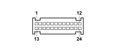

M060A AIR BAG CONTROL UNIT (DASHBOARD)
- Path
- Electrical equipment > 3 CONNECTORS > M INTERMITTENT AND TIMED ELECTRONIC DEVICES > M060 AIR BAG CONTROL UNIT > M060A AIR BAG CONTROL UNIT (DASHBOARD)
- Kind
- connector pinout (pin -> wire colour -> other end)
- Applies to
- all engines; all production periods; only with equipment: CONNECT
- Interactive page
- https://sloeber94.github.io/elrnDB-fPnd/en/#/169003450
Applies to: all engines; all production periods; only with equipment: CONNECT

Wiring | Colour |
|---|---|
- |
Pin | Cable | Destination | |||
|---|---|---|---|---|---|
Sec.. | Colour | Node | Connect. | Pin | |
1 | 0,5 | NZ (black with violet stripe) | 1 | ||
2 | 0,5 | W | 31 | ||
3 | 0,35 | BV (white with green stripe) | 3 | ||
5 | 0,35 | V (green) | 13 | ||
7 | 0,35 | SZ (pink with violet stripe) | 1 | ||
9 | 0,35 | BL (white with blue stripe) | 14 | ||
10 | 0,35 | AB (light blue with white stripe) | 13 | ||
21 | 0,5 | L (blue) | 11 | ||
22 | 0,5 | MB (brown with white stripe) | 12 | ||
23 | 0,5 | R (red) | 2 | ||
24 | 0,5 | Z (violet) | 1 | ||
Topics linked from this page (9)
- 20 FACIA
- B002 JUNCTION UNIT UNDER DASHBOARD
- C050B AIR BAG SYSTEM EARTH (DASHBOARD)
- D110 CLOCK SPRING AND STEERING WHEEL CONTROLS COUPLING
- E050B INSTRUMENT PANEL (DASHBOARD)
- H075 PASSENGER AIR BAG DISABLING SWITCH
- M065 Info-telematic control unit (NIT)
- Q011 AIR BAG IN DASHBOARD (PASSENGER SIDE)
- R010 MULTIPLE TESTER CONNECTION
Topics that link to this page (8)
- B002 JUNCTION UNIT UNDER DASHBOARD (DASHBOARD)
- C050B AIR BAG SYSTEM EARTH (DASHBOARD)
- D110 CLOCK SPRING AND STEERING WHEEL CONTROLS COUPLING (DASHBOARD)
- E050B INSTRUMENT PANEL (DASHBOARD)
- H075 PASSENGER AIR BAG DISABLING SWITCH (DASHBOARD)
- M065 Info-telematic control unit (NIT) (DASHBOARD)
- Q011 AIR BAG IN DASHBOARD (PASSENGER SIDE) (DASHBOARD)
- R010 MULTIPLE TESTER CONNECTION (DASHBOARD)